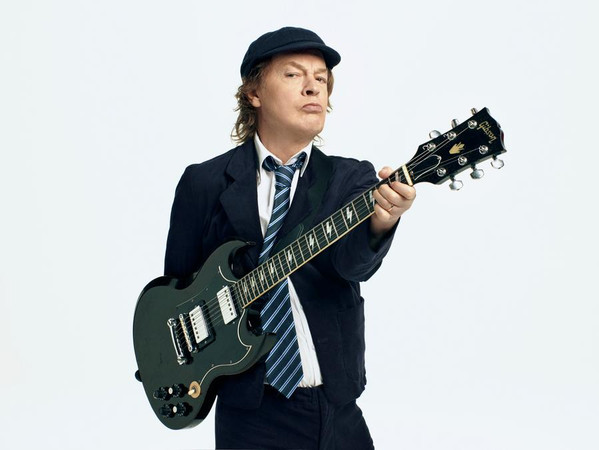

Quienes Somos
AC/DC es una banda de hard rock británica-australiana, formada en 1973 en Australia por los hermanos escoceses Malcolm Young y Angus Young. Sus álbumes se han vendido en un total estimado de 200 millones de copias, embarcándose en giras multitudinarias por todo el mundo y sus éxitos han musicalizado varias producciones cinematográficas sobresalientes. Son famosas sus actuaciones en vivo, resultando vibrantes y exultantes espectáculos de primer orden. Mucho de ello se debe al extravagante estilo de su guitarrista principal y símbolo visual, Angus Young, quien asume el rol de guitarrista principal durante los conciertos, gracias a sus dinámicos y adrenalínicos despliegues escénicos uniformado de colegial callejero. Al comienzo, los conciertos y tiempos por los cuales sufrieron diversos cambios en su alineación.
Los miembros del grupo
Angus Young-Guitarra líder
Brian Johnson-Voz principal
Malcolm Young-Guitarra rítmica

Phil Rudd-Baterista
Cliff Williams-Bajo eléctrico
Nuestra historia
En 1963 la familia Young, como muchas otras familias escocesas en aquellos años, abandonó los barrios bajos de Glasgow a causa de la gran depresión económica que afectaba a toda Gran Bretaña, para buscar una mejor vida en Australia. Encabezados por el matrimonio William y Margaret Young, acompañados de siete de sus ocho hijos (Steven, Margaret, John, William, George, Malcolm y Angus), se instalaron en Sídney. En Europa se quedó Alex, que ya por aquel entonces era músico, tocaba el saxofón y el trombón, y fue el principal artífice para que sus hermanos se inclinaran por la rama de la música. George fue el primero en experimentar profesionalmente con la música. Junto a su amigo Harry Vanda fundó The Easybeats, una de las primeras bandas australianas de éxito, número uno en 1968 en las listas de medio mundo con «Friday On My Mind». El tipo de música que hacían era un pop ligero, similar a lo que The Beatles tocaban por esos años. La experiencia fue fundamental para hacer nacer la pasión por la guitarra en otros dos hermanos de George: Angus y Malcolm.